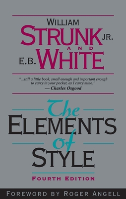
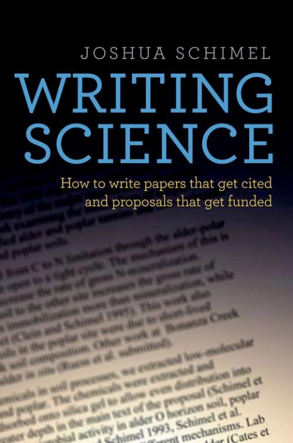

A few things beyond the papers.
A small collection of things I enjoy and resources I want to share.
On the run.
I started running as exercise in 2017 and have run regularly since 2019, with ups and downs. I have taken part in road races, half marathons, marathons, and a trail race.
Personal records
- 2024
Varvetmilen
10 km · 40:20
- 2022
Göteborgsvarvet
Half marathon · 1:30:25
- 2022
Helsingborg Marathon
Marathon · 3:30:30
Full race list · 16
- Å-stadsloppet Örebro 2025 · Half marathon
- Jönköping Half Marathon 2025
- Göteborgsvarvet 2025
- Thủy Nguyên Half Marathon 2025
- Blodomloppet Linköping 2025 · 10 km
- Hannover Marathon 2025 · Marathon
- Blodomloppet Göteborg 2024 · 10 km
- Göteborgsvarvet 2024 · Half marathon · 1:41:48
- Varvetmilen 2024 · 10 km · 40:20
- Göteborgsvarvet Marathon 2023 · Marathon · 3:31:36
- Varvetmilen 2023 · 10 km · 41:55
- Helsingborg Marathon 2022 · Marathon · 3:30:30
- Göteborgsvarvet 2022 · Half marathon · 1:30:25
- Finalloppet 2021 · 19 km trail · 1:33:16
- Göteborgsvarvet 2021 · Half marathon · 1:43:29
- Broloppet Motala 2026 · 10 km
A community
for conversation.
I help connect Vietnamese researchers through telecom-vn, a community for discussion and online seminars in telecommunications. I also take part in other organizations for the development of Vietnamese community in science and technology. Sharing knowledge and keeping these conversations going is part of what I want to contribute beyond my own projects.
- Join telecom-vn ↗
The community on Facebook
- Watch the seminars ↗
The telecom-vn YouTube channel
- AVISE ↗
Association of Vietnamese Science and Technology Experts in Sweden
Reading & writing.
Reading is one of my hobbies, and Haruki Murakami is my favorite author.
Two of my favorite books on scientific writing, kept here for students, colleagues, and anyone working on their next piece of writing.

Writing Science
How to Write Papers That Get Cited and Proposals That Get Funded
Joshua SchimelConversations & stories.
A selection of interviews and profiles about my path, experiences, and connection to the wider community.
Heidelberg Laureate Forum · Spektrum · English
The internet of things ↗
SGGP · English
Give your best, make a difference wherever you are ↗
VOV · Tiếng Việt
Tôi muốn được góp sức cho sự phát triển cộng đồng nghiên cứu ở Việt Nam ↗
Tuổi Trẻ · Tiếng Việt
Thử thách lớn nhất là thay đổi tư duy ↗
Full media coverage · 24 links
- An interview in the spotlight of the 9th Heidelberg Laureate Forum ↗English
- An interview in the 10-out-of-200 list of participants of the 7th Heidelberg Laureate Forum ↗English
- Honda Foundation interview · Part 1/4 ↗English
- Honda Foundation interview · Part 2/4 ↗English
- Honda Foundation interview · Part 3/4 ↗English
- Honda Foundation interview · Part 4/4 ↗English
- Give your best, make a difference wherever you are ↗English
- Tiến sĩ trẻ và nghiên cứu về IoT ↗Tiếng Việt
- Nhà khoa học trẻ vươn tầm quốc tế với những dấu ấn công nghệ nổi bật ↗Tiếng Việt
- Làm hết mình thì ở đâu cũng là cống hiến ↗Tiếng Việt
- Hãy theo đuổi sự xuất sắc, thành công sẽ tìm đến bạn! ↗Tiếng Việt
- Ai cũng có thể trở thành công dân toàn cầu ↗Tiếng Việt
- Diễn đàn Heidelberg truyền cảm hứng và động lực cho tôi theo đuổi nghiên cứu học thuật ↗Tiếng Việt
- Chàng trai liên tiếp thủ khoa tốt nghiệp ↗Tiếng Việt
- Tôi muốn được góp sức cho sự phát triển cộng đồng nghiên cứu ở Việt Nam ↗Tiếng Việt
- Thử thách lớn nhất là thay đổi tư duy ↗Tiếng Việt
- Từ cậu học sinh trường làng đến diễn đàn khoa học quốc tế ↗Tiếng Việt
- Chàng trai 9X truyền cảm hứng nghiên cứu trên diễn đàn quốc tế ↗Tiếng Việt
- Câu chuyện “Bố em làm nghề buôn đỗ” ↗Tiếng Việt
- Tự học và đam mê sáng tạo ↗Tiếng Việt
- Ghi danh sổ vàng ↗Tiếng Việt
- Từ thất bại trở thành thủ khoa xuất sắc ↗Tiếng Việt
- Chàng sinh viên đam mê khoa học ↗Tiếng Việt
- Kinh nghiêm học tiếng Anh ↗Tiếng Việt
Something to share?
Have a book to recommend, an idea for a community conversation, or a running story to share? I’d be glad to hear from you.